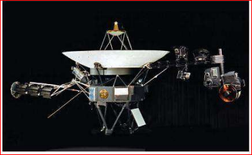
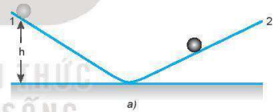
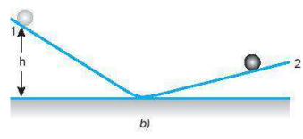
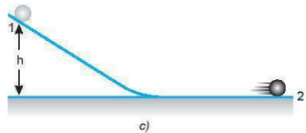
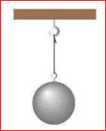
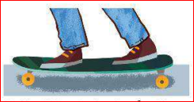
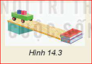
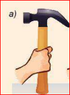
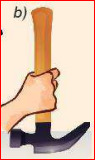
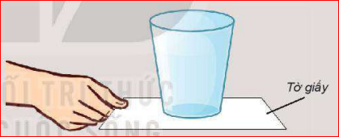

Hình bên cho thấy một trong hai con tàu vũ trụ Voyager đang làm nhiệm vụ thăm dò các hành tinh nằm xa Trái Đất trong hệ Mặt Trời. Chúng được phóng lên từ Mũi Canaveral, Florida (Hoa Kì) vào năm 1977 và hiện nay cả hai con tàu đã ra khỏi hệ Mặt Trời, đang tiếp tục hoạt động và gửi thông tin về Trái Đất.
Điều gì đã giúp cho tàu Voyager tiếp tục chuyển động rời xa Trái Đất, mặc dù thực tế không còn lực nào tác dụng lên chúng nữa?

Nguồn ảnh: NASA VoyagerLực có phải là nguyên nhân làm cho một vật chuyển động và duy trì chuyển động đó hay không?
Một quyển sách đang nằm yên trên mặt bàn. Ta phải đẩy nó thì nó mới dịch chuyển và khi ngừng đẩy thì nó dừng lại. Nếu em đặt mình vào thời của nhà khoa học Hy Lạp Aristotle (384-322 TCN), khi mà mọi người còn chưa biết đến ma sát, thì em sẽ trả lời câu hỏi nêu ra như thế nào?
Galilei bố trí thí nghiệm như Hình 14.1, rồi thả hòn bi cho lăn xuống theo máng nghiêng 1. Ông nhận thấy hòn bi lăn ngược lên máng 2 đến một độ cao thấp hơn độ cao ban đầu.
Khi hạ thấp độ nghiêng của máng 2, ông thấy hòn bi lăn trên máng 2 được một đoạn dài hơn. Ông cho rằng hòn bi không lăn được đến độ cao ban đầu là vì có ma sát. Ông tiên đoán rằng nếu không có ma sát và nếu máng nghiêng 2 nằm ngang thì hòn bi sẽ lăn mãi mãi với vận tốc không đổi.
 |  |  |
Hình 14.1. Minh hoạ thí nghiệm của Galilei
Năm 1687, nhà vật lí người Anh Newton đã khái quát kết quả nghiên cứu của mình, đồng thời phát triển các ý tưởng của Galilei thành một định luật chuyển động, sau này được gọi là định luật 1 Newton:
Định luật 1 Newton:
Nếu một vật không chịu tác dụng của lực nào hoặc chịu tác dụng của các lực có hợp lực bằng không, thì vật đang đứng yên sẽ tiếp tục đứng yên, đang chuyển động sẽ tiếp tục chuyển động thẳng đều.
Quan sát các vật trong Hình 14.2.

a) Quả cầu đứng yên khi được treo vào một sợi dây

b) Người trượt ván chuyển động với vận tốc không đổi
Tính chất bảo toàn trạng thái đứng yên hay chuyển động của vật, gọi là quán tính của vật.
Do có quán tính mà mọi vật có xu hướng bảo toàn vận tốc cả về hướng và độ lớn. Định luật 1 Newton còn được gọi là định luật quán tính.
Thí nghiệm minh hoạ quán tính của vật (Hình 14.3)
Chuẩn bị: Một tấm ván dài khoảng 1 m làm mặt phẳng nghiêng, xe lăn, vật nhỏ đặt trên xe lăn, vật chắn (có thể dùng quyển sách dày).
Tiến hành:
Thảo luận:

1. Mô tả và giải thích điều gì xảy ra đối với một hành khách ngồi trong ô tô ở các tình huống sau:
a) Xe đột ngột tăng tốc.
b) Xe phanh gấp.
c) Xe rẽ nhanh sang trái.
2. Một vật đang chuyển động với vận tốc \( 3~m/s \) dưới tác dụng của các lực. Nếu bỗng nhiên các lực này mất đi thì:
3. Một vật đang nằm yên trên mặt bàn nằm ngang. Tại sao ta có thể khẳng định rằng bàn đã tác dụng một lực lên nó?



Bài 1: Một khối gỗ khối lượng \( m = 2~kg \) đang trượt thẳng đều trên mặt sàn nằm ngang. Biết lực đẩy tác dụng vào khối gỗ có phương ngang, độ lớn \( F = 5~N \). Tính độ lớn của lực ma sát giữa khối gỗ và mặt sàn.
Bài 2: Một vệ tinh đang bay trong không gian rỗng (không có lực hấp dẫn, không có lực cản) với vận tốc \( v = 2000~m/s \). Vệ tinh tắt động cơ. Hỏi sau \( t = 10~s \), vệ tinh đi được quãng đường là bao nhiêu?
Bài 3: Hai lực có độ lớn lần lượt là \( F_1 = 30~N \) và \( F_2 = 40~N \) tác dụng vào cùng một vật đứng yên. Biết hai lực này có phương vuông góc với nhau. Hỏi cần tác dụng thêm một lực \( \vec{F}_3 \) có độ lớn bao nhiêu để vật vẫn giữ nguyên trạng thái đứng yên?